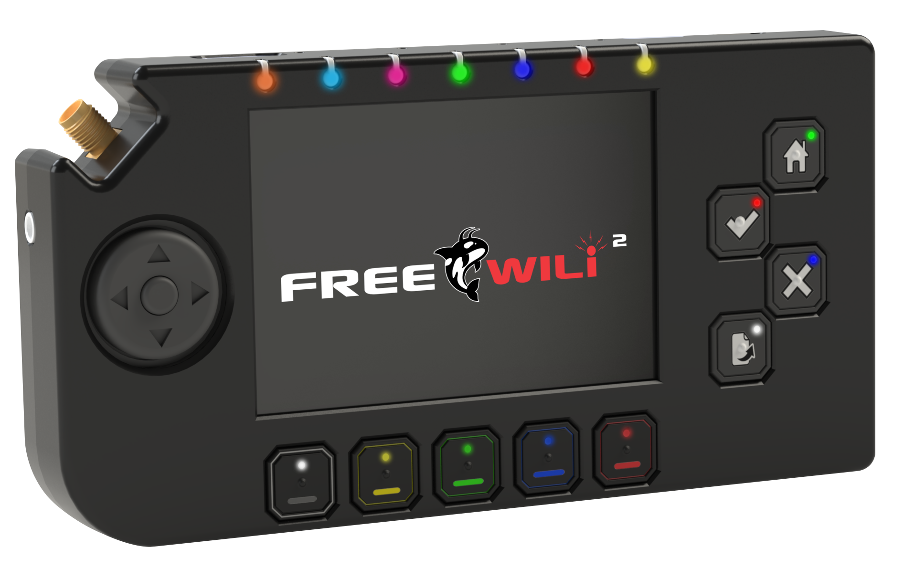
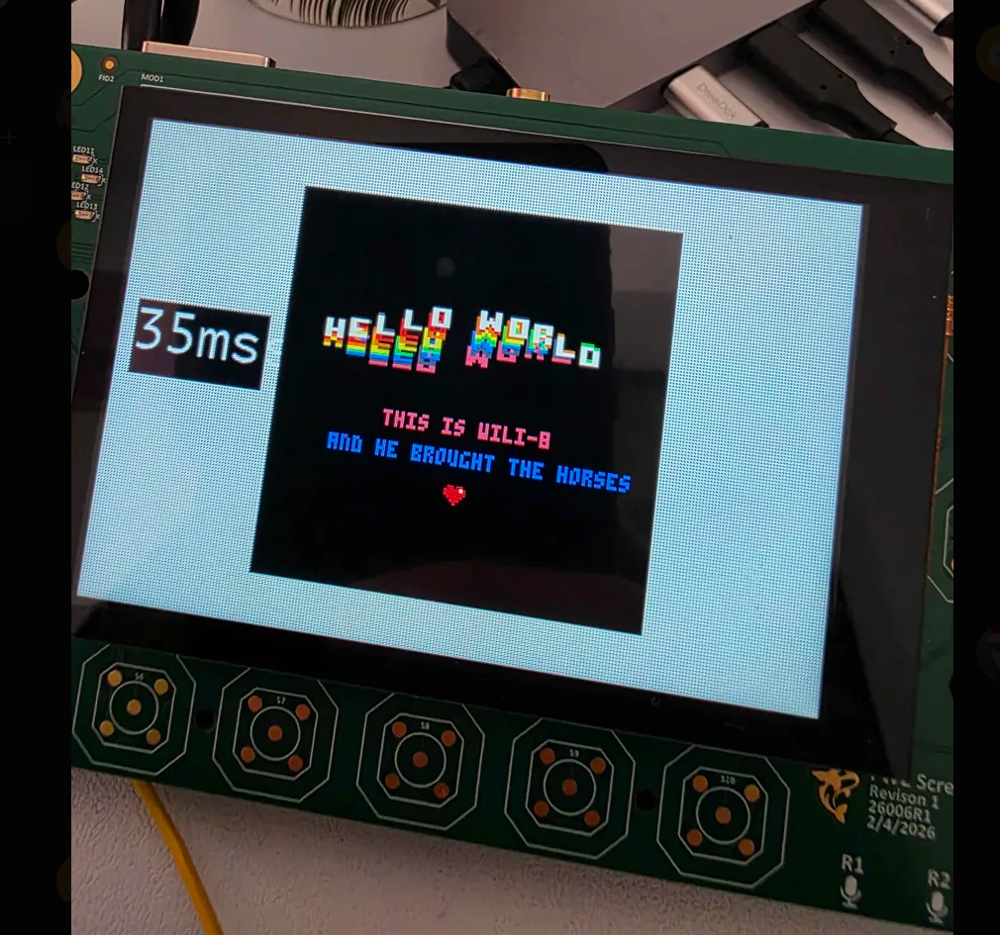
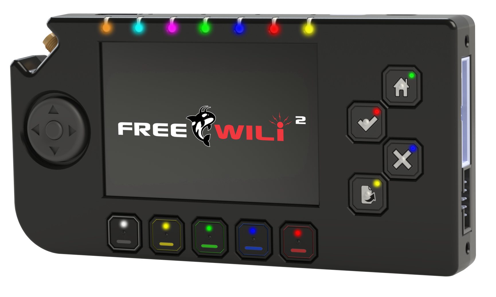
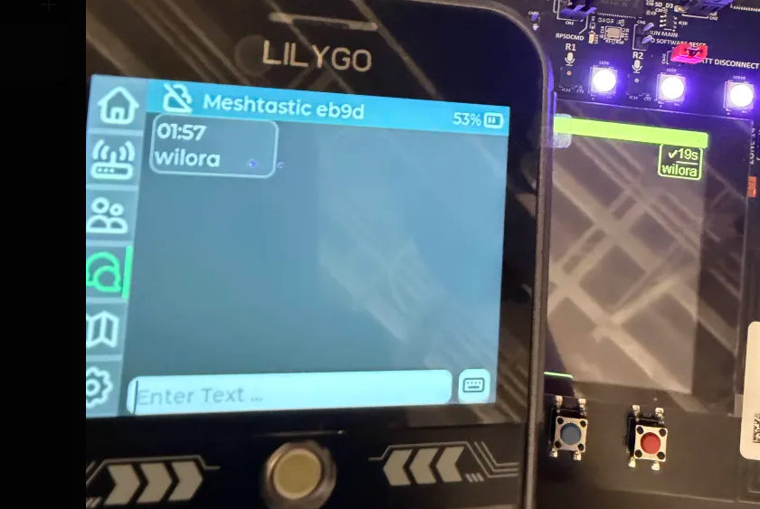
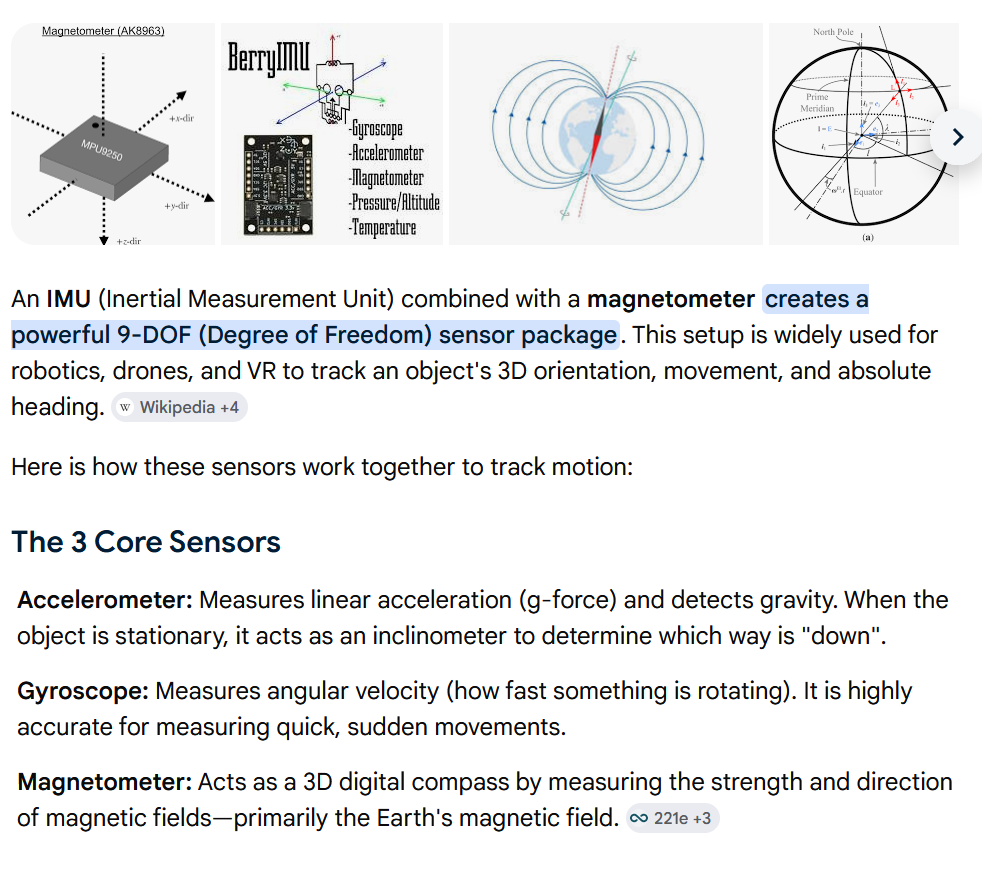
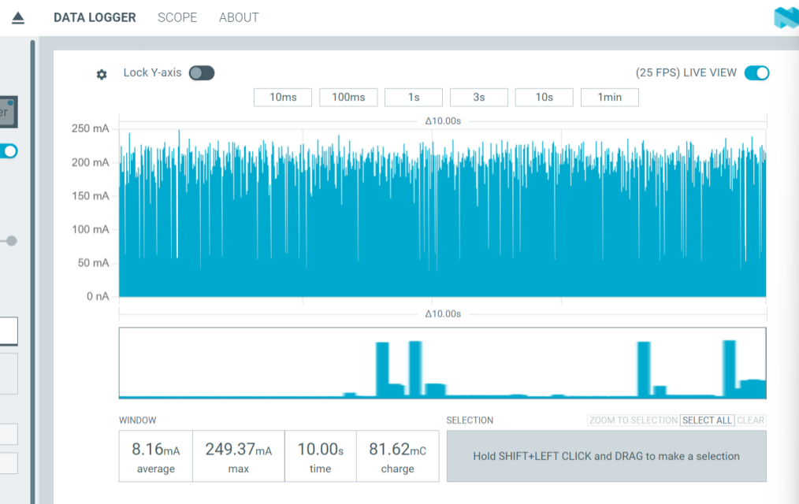
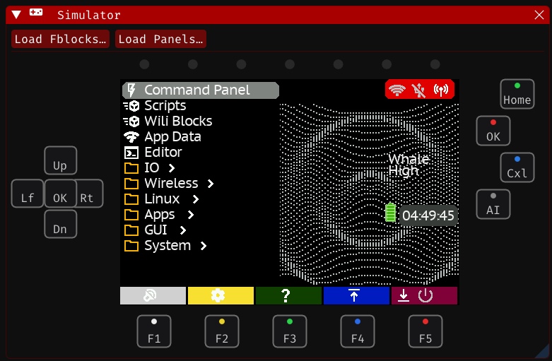
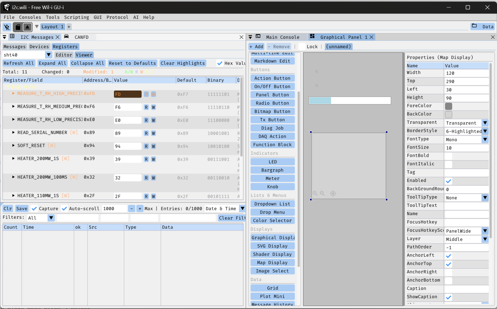
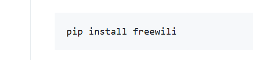

The open electronics multitool. A pocket lab for wireless, gpio, analog, RFID, CAN, retro gaming, onboard Linux — and AI agents that write firmware with you.

Everything, in one pocket.
FREE-WILi 2 packs a full electronics lab, a software-defined radio bench, and a games console into an open, scriptable, agent-ready tool.
Community Favorite CPU/FPGA Technologies
Raspberry Pi RP2350, Espressif ESP32C5, Raspberry Pi CM0, ICE40UP5K - all widely used technologies and supported by the community. All have great open source tools available. All can be programmed and debugged with the onboard debug hardware.
There is one "main" RP2350 CPU that controls IO and does scripting. The second RP2350 "display" controls all the GUI elements (buttons, screen, sound, DVI). They both have the max memory 8 MByte of serial SRAM and 16 MByte of flash.
Even though the RP2350 PIO is amazing, there are some things you can't do. The ICE40UP5K FPGA covers those — like SPI-slave emulation or multicore RISCV IO. The FPGA has an 8 MByte SRAM too and can be swapped dynamically with the main CPU. Supported by the ICEStorm project.
The Raspberry Pi CM0 offers up real Python scripting, mature software tools, onboard CPU/FPGA compilers, and big libraries you can't do well in embedded.
The ESP32C5 provides wireless access to FREE-WILi 2. The C5 model supports both 2.4 and 5 GHz. The ESP32 USB is connected directly to the host - so its built in JTAG and COM port just works with the Espressif SDK or other tools.
- Community Silicon
- Onboard Debug
- FPGA
- Linux

Multi Media User Experience
A 3.5″ capacitive touchscreen with 480×320 of color. Around it: a full 5-way D-pad, four A/B/X/Y backlit buttons (home · ok · cancel · page), five under-screen context backlit keys, and an innovative two-press-per-letter keyboard.
Audio is first class with onboard 2 Watt speaker and 4 channel phased-array microphone. A 3.5 mm jack lets you connect to speakers, mic or headphones for big or little sound.
Full color LEDs visible from multiple sides give you indication of what's going on. Also buttons contain LEDs for indication when they are needed.
Doing something heavy and OK with being less portable? The USB host allows standard keyboard, mouse or joystick input. Those mini Bluetooth keyboards work nicely.
Tilt it, too — the onboard IMU turns physical position into an input axis.
- 480×320 cap-touch
- 5-way D-pad
- A·B·X·Y
- 5 context keys
- motion input
- backlit

Radio Time.
WiFi is now built in and supports both 2.4 GHz and 5 GHz. And other standards supported by the ESP32C5: BT LE, IEEE 802.15.4 (Zigbee and Thread).
SubGHz rides a single antenna that switches between a CC1101 and a LoRa radio. We ported Meshtastic, so FREE-WILi 2 talks to the mesh straight out of the box. You can switch the antenna dynamically - so at low bandwidth these radios effectively can be used at the same time.
NFC and 125 kHz RFID are supported with internal antennas on the rear of the device. 125 kHz RFID — where the RP2350's fast ADC and PIO get genuinely interesting — plus NFC via the ST25R3916B.
IR transmit and receive are onboard too, with a dedicated IR window.
- WiFi 5GHz · C5
- CC1101
- LoRa
- Meshtastic

25 Expandable, software-defined I/O.
Both a 20 pin connector and a 10 pin connector supply flexible voltage high speed IO. There is a rigid mounting system with off-the-shelf case options that make add-ons seamless and rugged. We call FREE-WILi add-ons Orcas and you can even make your own with our orca development kit.
The GPIOs are driven by the FREE-WILi scripting engines. The scripting engines utilize the RP2350 PIO, the RISCV CPU and the FPGA for precise timing control. While most pins have programmable direction, the default functions and directions include: SPI, UART, and I2C.
Analog IO are onboard too: 0–5V analog in, 0–5V analog out at 25 kHz. The analog inputs are fully buffered with opamps and bring the entire 0-5V to the high speed RP2350 ADC. Analog inputs also have a ADC with PGA for measuring low level signals like bridge sensors or current shunts.
There is a new 1–5.5V / 1.5A programmable supply with a MOSFET crowbar for voltage glitching.
Set the GPIO IO voltage in software from the 5V rail, 3.3V rail, the pin itself, or the onboard programmable supply — and measure the IO voltage with an ADC.
CAN FD at full 8 Mbit with the latest CAN SIC transceiver. CANFD is backward compatible with CAN which is on every vehicle for the past 15 years.
- PIO+FPGA+RISCV Control
- CAN FD 8Mbit
- Glitch
- 0–5V Analog in/out
- PGA + window comparator
- prog. PSU + crowbar

9-DOF motion + environment.
A full IMU (BMI323) plus magnetometer (BMM350) opens up motion and orientation as input. An OPT4001 ambient light sensor and an SHT40 temperature/humidity sensor round out environmental awareness.
Audio levels up too: a 3.5 mm headphone/mic jack and a 4-mic phased array that, with the RP2350's spare cycles, makes real beamforming possible. Viva Las Vegas, loud and clear.
There are so many great sensors on I2C. Our GPIO connector makes adding new sensors easy.
- BMI323 IMU
- BMM350 mag
- OPT4001 light
- SHT40 temp/RH
- 4-mic array

17 power zones, one tiny brain.
A portable device needs to run on a battery for as long as possible. We included a dedicated ultra-low-power (ULP) micro that switches 17 power zones on and off dynamically. Sensors wire into the ULP as wake sources, the battery is 3000 mAh, and the ULP squeezes the most out of whatever USB power is available — while managing charging.
For example, the Linux CM0 runs on its own power zone. Running a full 64-bit Linux system can be power hungry. So maybe it makes sense to only power it when specific tasks are running.
- ULP micro
- 17 zones
- 3000mAh
- 7-port hub

Make and Load Your App
The IO interfaces and connections are documented for the RP2350s and ESP32. The example template projects exist in github. The onboard Raspberry Pi debug probe is connected. You are all set to get started on your awesome software app - or port an amazing community app.
When you are ready to ship, the SD-card bootloader loads applications written by anyone/anything. Drop a UF2 on the card and run it. The onboard USB reader makes this a snap.
- Open Hardware
- UF2 from SD
- Onboard Debug
Software Makes it Happen
FREE-WILi 2 is a platform for running any code — FREE-WILi default firmware, ported open source projects, or software done by the user, for the user.
Ready to go, out of the box.
The FREE-WILi Firmware runs all the features out of the box — the default firmware ships with the USB CLI, Python Host API, GUI screens, and stand-alone scripting enabled.
The default firmware is also a bootloader. It can cleanly launch UF2 files right from the device menu.
Stand-alone scripting ties all the hardware together the way you want. On device compiled code like the following: 1) rThon is a Python-like real time scripting engine, 2) WiliBlocks give you point-and-click scripting, and 3) ZoomIO for RISCV scripting for sub microsecond real time control.
Need the power of Rust or C++? There is also an onboard WASM engine called WiliWasm. WiliWasm is designed for real time and supports remote debugging from FREE-WILi GUI.
- GUI and CLI
- App Loader
- Scripting
- Real-Time

Take it to the next level with a host PC.
There are just some projects that are too big to set up and ideate on the small user interface - FREE-WILi GUI is a USB-drive-capable app that has GUIs to make configuration or host PC use just point and click. You can launch it straight from the device's SD card, no install needed.
The FREE-WILi GUI offers scripting options just like hardware. For example you can have WiliBlocks run on the host or device at the same time.
Draw to the screen the same way whether you're on the device, in WASM, or over the headless Linux API.
- WASM compiler/debugger
- I2C DB
- GUI builder
- portable

Python: pip install freewili
Python, with libraries for everything, can do almost anything — FREE-WILi has a Python API you or your agents can use to make really cool applications.
Even better, the onboard Linux CPU can run your FREE-WILi apps without your host PC. So build it with your desktop and send it down to the onboard Linux to run.
- Python API
- host PC
- onboard Linux
- agent-friendly

Claude Code, in the loop.
The new age of AI lets tools like Claude Code write and debug your embedded application the way you want it. FREE-WILi GUI ships with integration for Claude and LM Studio for local models — and our open hardware docs plus Agent.md files give agents everything they need to create and debug code on open hardware.
Onboard debugging seals the end-to-end testing loop: an enhanced Raspberry Pi Debug Probe flashes and debugs both RP2350 cores and the LoRa processor — in the box.
- Claude API
- LM Studio (local)
- Agent.md
- in-box debug

Fruit Jam-compatible. Doom-approved.
The display CPU is nearly 100% compatible with Adafruit's Fruit Jam — port a Fruit Jam app to FREE-WILi 2 with barely a change. Our team brought up PICO-8 and, of course, Doom.
It runs Doom.
Comfortable buttons, a real D-pad, and a large display CPU make retro gaming first class. PICO-8 brought up its reality-console fantasy world; Doom brought the demons. A full-size DVI connector (HSTX-driven) puts it all on the big screen.
Adafruit's RP2350-based Fruit Jam mini computer shares almost all of FREE-WILi 2's display-CPU hardware (a few pins differ). That compatibility is the bridge: the broad Fruit Jam software ecosystem comes along for the ride, and it's what hinted at USB host in the first place.
- Fruit Jam compatible
- PICO-8
- Doom
- DVI out
Specifications
Compute
- Main / Display
- 2× RP2350 (dual-core, PIO)
- Memory
- 8 MB SRAM / 16 MB Flash per RP2350
- FPGA
- Lattice ICE40 with 8 MB SRAM
- Linux
- Optional Raspberry Pi CM0
- LoRa
- STM32WLE5JC — STM32 with integrated LoRa
- Debug
- Enhanced RPi Debug Probe (RP2350 + LoRa)
Display & Input
- Screen
- 3.5″ 480×320 capacitive touch
- D-pad
- 5-way + A·B·X·Y (home/ok/cancel/page)
- Keys
- 5 under-screen context buttons
- Keyboard
- 2-press-per-letter
- Motion
- IMU position as input
- USB host
- Keyboard, mouse, and joystick
Connectivity
- WiFi/BT
- ESP32-C5, 2.4 + 5 GHz
- SubGHz
- CC1101 + LoRa (Meshtastic)
- RFID/NFC
- 125 kHz + ST25R3916B
- CAN
- CAN FD, 8 Mbit
- Video
- Full-size DVI (RP2350 HSTX)
- USB host
- 3× (2× 12 Mbit RP2350 DISPLAY + 1× 480 Mbit CM0)
- GPS
- Via USB host
- IR
- Tx/Rx, case window
Analog & GPIO
- Connectors
- 20-pin (FW1) + 10-pin analog + posts
- Analog in
- 0–5V, op-amp + PGA front end
- Analog out
- 0–5V @ 25 kHz
- Prog. PSU
- 1–5.5V / 1.5A + MOSFET crowbar
- IO voltage
- SW-selectable + ADC measure
- I2C
- 3.3V Orca bus w/ EEPROM
Sensors & Audio
- IMU
- BMI323 (9-DOF w/ mag)
- Magnetometer
- BMM350
- Light
- OPT4001 ambient
- Climate
- SHT40 temp / humidity
- Audio
- 4-mic array + 3.5 mm jack
Power
- ULP
- Dedicated micro, 17 power zones
- Battery
- 3000 mAh + USB-aware charging
- Sleep current
- TBD
Storage
- Storage
- Dual microSD (device + Linux)
- SD reader
- High-speed USB, RPi-Imager ready
- Boot
- SD-card UF2 bootloader
Physical
- Dimensions
- 152.4 × 78.9 × 22.3 mm
(6.00 × 3.11 × 0.88 in) - Weight
- TBD
Get FREE-WILi2 at DEFCON.
Preorder and pickup at the show. DEFCON Founders Edition. Limited supply available.